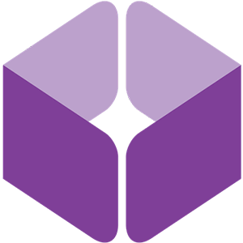

Projets Professionnels
Stage à l'Institut Clément Ader (Avril-juin 2018)
Objectif : Refonte complète du site web de l'ICA, en utilisant WordPress, pour moderniser son apparence, restructurer sa base de donnèes et améliorer voire compléter ses fonctionnalités (notamment des pages de gestion en intranet).
Outils :

Note finale du stage : 17/20
Made with by Benoît Pannetier © 2019
Finding Space by Takahiro Sakamoto